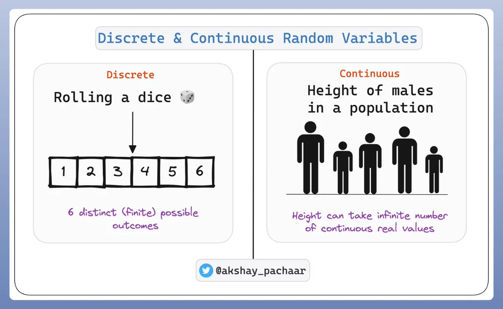
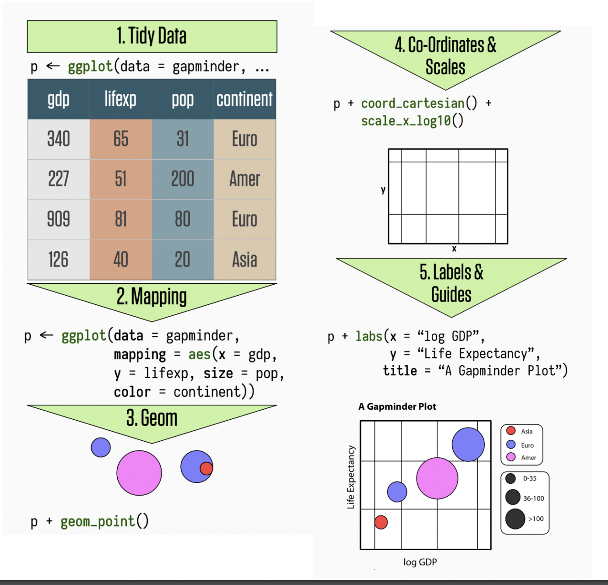

prob_class_viz
Outline
Probability - what is it?
Random processes and variables
Probability distributions
DGP
ggplotprimerVisualizing variance
Packages
#| echo: false
#| message: false
library(pacman)
p_load("tidyverse")
Probability warm-up
What is probability of drawing the ace of spades from a fair deck of cards?
What is the probability of drawing an ace of any suit?
You are going to roll some dice twice. What is the probability you roll doubles?
What is the chance that a live specimen of the New Jersey Devil will be found?
Who is more likely to be a victim of a street robbery, a young man or an old woman?
Frequentist interpretation of probability
- Classical statistical inference is based off this interpretation
The frequentist approach treats probabilities as relative frequencies
- If we say that the probability of rolling a 5 on a fair die is 1/6, we mean that, if the die were rolled an infinite number of times, 1/6 of all rolls would be a 5
What probability is not
What is probability theory?
Probability is the study of random processes
Probability is used to characterize uncertainty/randomness

Random processes: intuition
coinflips <- function(x) {
flip=rbinom(x, 1, 0.5)
flip=ifelse(flip==1, "Tails", "Heads")
return(flip)
}
coinflips(1)
- Let’s flip a fair coin
coinflips <- function(x) {
flip=rbinom(x, 1, 0.5)
flip=ifelse(flip==1, "Tails", "Heads")
return(flip)
}
coinflips(1)
Can you tell me what the outcome will be?
If we were to flip a fair coin many many times, would you be able to tell the proportion of times that we would obtain heads?
. . .
- If answer to first question is “NO” AND Answer to second question is “YES”
- You are dealing with a random process
Random processes
- Random processes are mechanisms that produce outcomes… from a world/set of possible outcomes… with some degree of uncertainty but with regularity
Examples of random processes
- Random assignment in experiments
. . .
- Random dram of a sample of n individuals from a population of N individuals
. . .
- Rolling a die
What is a random variable?
A variable that depends on a random process
Think about the following random phenomenon: “randomly selecting 2 students in this class room”
Sample space?
One possible outcome: \(\omega = \{\mathrm{Ari, \: Alex}\}\)
Another possible outcome: \(\omega = \{\mathrm{Aditi, \: Brooke}\}\)
What is a random variable?
- Can this be considered a random variable?
. . .
No. Random variables are always numeric
We operate on random variables using math
Illustration
Random variables are mappings from events to numbers
Formally, a random variable is defined as a function that maps the sample space \(\Omega\) of a random generative process into the real line (or into real numbers)
Probability distribution functions
Two types of random variables
Discrete
Continuous
The distribution of a random variable \(X\) describes the likelihood of the values that \(X\) can take
Discrete random variables: definition
Discrete random variables are defined on a range that is a countable set
i.e., they can only take on a finite or countably infinite number of different values

Probability mass function (PMF)
Let \(X\) be a discrete random variable
The probability mass function (PMF) of \(X\) summarizes the probability of each outcome \(x\)
PMF: function \(p\) given by \[P(X = x)\]
\(X\) = RV
\(x\) = value
Example: Dessert tonight
Imagine that you started a strict diet a few days ago. You are at a dinner party at your friend‚Äôs who made your favorite dessert. You are very tempted and make the decision to flip a coin three times. The number of times that the flip coin returns tail determines the number of bites of the dessert you will have. Before you start flipping the coin, you want to learn more about your chances of not having dessert tonight. To do that, you decide to look at the possible outcomes. You let ùëã be the number of times a series of three coin flips returns tails (T). The support of ùëã is {0, 1, 2, 3}.
Dessert tonight
outcomes <- c('H', 'T')
sample_space <- expand.grid(outcomes, outcomes, outcomes)
sample_space
PMF: Dessert tonight
#| echo: false
#| fig-align: "center"
#|
# Define parameters
n <- 3
p <- 0.5
# Calculate probabilities
x <- 0:n
probabilities <- dbinom(x, n, p)
# Plot PMF
df <- data.frame(x, probabilities)
ggplot(df, aes(x=x, y=probabilities)) +
geom_bar(stat="identity", fill="skyblue") +
labs(title="PMF of number of tails in 3 coin flips",
x="Number of tails",
y="Probability") +
theme_minimal() +
geom_text(aes(label=sprintf("%.2f", probabilities)), vjust=-0.5)
Cumulative distribution function (CDF): definition
The CDF of a random variable is the function \(F\) such that
- \(F(x) = P(X \leq x)\)
CDF tells us the probability that an outcome below a specific outcome occurs
Sums to 1
#| echo: false
#|
# Generate a random dataset
set.seed(666)
data <- data.frame(x = rnorm(100))
# Calculate the cumulative distribution
data <- data %>%
arrange(x) %>%
mutate(cdf = row_number() / n())
# Create the CDF plot
ggplot(data, aes(x = x, y = cdf)) +
geom_line() +
geom_point() +
ggtitle("CDF of Random Data") +
xlab("Data Points") +
ylab("CDF")
Continuous random variables: Definition
- A continuous random variable is a variable that can take on an infinite number of values within a given range or interval
Probability Density Function (PDF): Definition
- PDF is continuous version of PMF
- The PDF of a random continuous variable is the function \(F\) such that \(F(x) = P(a \geq X \geq b)\)
- PDF tells us the probability of range of outcomes
- What is probability of observing IQ between 100 and 125?

CDF
\(F(x) = P(X \leq x)\)

Summarizing random variables
PMFs, PDFs, CDFs are very useful tools to summarize information from rvs.
Many other ways to summarize random variables!
- e.g., mean, median, standard deviation, etc.
Our goal as statisticians

Link probability distributions to the data generating process (DGP)
The data generating process (GDP) represents the “real-world” process of how data comes about
Probability distributions are mathematical models used to model and understand the DGP
DGP
Bottom-up: This approach begins with the observed data. By examining the data distribution, one might make educated guesses or inferences about the underlying processes that produced it
Top-down: This approach relies on pre-existing knowledge or theories about the system or phenomenon in question to inform our understanding of the DGP

Bootstrapping
Sampling with replacement
A computer based method for deriving the probability distribution for any random variable
How to do it
- Run your analysis a bunch of times with a slightly different set of observations each time
- Dice roll
x=1:6 sample(x, 6, replace=TRUE) sample(x, 6, replace=TRUE) sample(x, 6, replace=TRUE)
Once we have an idea about the DGP we can simulate data to see if it conforms to expectations.
Sampling helps us build up our intuitions about probability distributions
The book talks about dice rolls.
What are some others?
Bootstrapping
#| echo: false
library(ggplot2)
library(dplyr)
# Simulated dice rolls (replace this with your actual data if you have one)
set.seed(123)
dice_rolls <- sample(1:6, 1000, replace=TRUE)
# Bootstrap the rolls
n_bootstraps <- 1000
bootstrap_samples <- replicate(n_bootstraps, sample(dice_rolls, length(dice_rolls), replace=TRUE))
# Calculate the mean occurrence of each roll in the bootstrapped samples
bootstrap_probabilities <- colMeans(sapply(1:6, function(i) rowMeans(bootstrap_samples == i)))
# Create data frame for plotting
dice_df <- data.frame(
roll = 1:6,
probability = bootstrap_probabilities
)
# Plotting with ggplot2
ggplot(dice_df, aes(x=roll, y=probability)) +
geom_bar(stat="identity") +
labs(title="Bootstrapped Dice Roll Probabilities",
x="Dice Roll",
y="Probability") +
ylim(0, 1) +
scale_x_continuous(breaks=1:6)Sources of Variance
- There is uncertainty associated with the DGP


Randomness
Shuffling (permutation tests)
knitr::include_url("https://www.jwilber.me/permutationtest/", height = "800px")
Visualizing variance

ggplot2is tidyverse’s data visualization package (plotninein Python uses similar syntax)The gg in
ggplot2stands for Grammar of GraphicsIt is inspired by the book Grammar of Graphics by Leland Wilkinson
A grammar of graphics is a tool that enables us to concisely describe the components of a graphic
ggplot2

ggplot2
Let’s start with a blank canvas
ggplot()ggplot2 - Data

#| fig-align: "center"
library(palmerpenguins)
ggplot(data=penguins, mapping = aes(x=bill_length_mm, y = flipper_length_mm))+
theme_minimal(base_size = 16)ggplot2 - Layers
Let’s add a geom
geom_pointadds a dot for each raw data point
#| code-line-numbers: "2"
#| fig-align: "center"
ggplot(data=penguins, mapping = aes(x=bill_length_mm, y = flipper_length_mm)) +
geom_point()+
theme_minimal(base_size = 16)
ggplot2 - Layers
Let’s add another geom
geom_smoothplots a smoothed line for the data
#| code-line-numbers: "2"
#| fig-align: "center"
ggplot(data=penguins, mapping = aes(x=bill_length_mm, y = flipper_length_mm)) +
geom_smooth()+
theme_minimal(base_size = 16)
ggplot2 Layers
- Maybe a linear line
#| code-line-numbers: "2"
#| fig-align: center
ggplot(data=penguins, mapping = aes(x=bill_length_mm, y = flipper_length_mm)) +
geom_smooth(method="lm")+
theme_minimal(base_size = 16)
ggplot2 - Layers
- It might be nice to see the raw data WITH the line. We can combine geoms!
#| code-line-numbers: "2-3"
#| fig-align: center
ggplot(data=penguins, mapping = aes(x=bill_length_mm, y = flipper_length_mm)) +
geom_point() +
geom_smooth(method="lm")+
theme_minimal(base_size = 16)
ggplot2 - Size
- Points are a bit small. Let’s make them bigger!
#| code-line-numbers: "2"
#| fig-align: center
ggplot(data=penguins, mapping = aes(x=bill_length_mm, y = flipper_length_mm)) +
geom_point(size = 2, alpha=.3) +
geom_smooth(method="lm")+
theme_minimal(base_size = 16)
ggplot2 - Color
- How could we add information about different types of penguins?
#| code-line-numbers: "1"
#| fig-align: center
ggplot(data=penguins, mapping = aes(x=bill_length_mm, y = flipper_length_mm, color=species)) +
geom_point(size = 4)+
theme_minimal(base_size = 16)
ggplot2- Axes
Let’s clean up our plot
- Add clearer axis labels
#| code-line-numbers: "3"
#| fig-align: center
ggplot(data=penguins, mapping = aes(x=bill_length_mm, y = flipper_length_mm, color=species)) +
geom_point(size = 4) +
xlab("Bill Length in milimters") +
ylab("Flipper Length in milimeters")+
theme_minimal(base_size = 16)
ggplot2 - Title
Let’s clean up our plot
Add title
#| code-line-numbers: "5"
#| fig-align: center
title <- ggplot(data=penguins, mapping = aes(x=bill_length_mm, y = flipper_length_mm, color=species)) +
geom_point(size = 4) +
xlab("Bill Length in milimters") +
ylab("Flipper Length in milimeters") +
ggtitle("Palmer Penguins: Bill length vs Flipper length") +
theme_minimal(base_size = 16)
#| echo: false
#|
titleggplot2 - Themes
#| code-line-numbers: "6"
#| fig-align: center
theme_plot <- ggplot(data=penguins, mapping = aes(x=bill_length_mm, y = flipper_length_mm, color=species)) +
geom_point(size = 4) +
xlab("Bill Length in milimters") +
ylab("Flipper Length in milimeters") +
ggtitle("Palmer Penguins: Bill length vs Flipper length") +
theme_dark(base_size = 16)
theme_plotggplot2 - Themes


library(MetBrewer)
#| code-line-numbers: "6"
#| fig-align: center
ggplot(data=penguins, mapping = aes(x=bill_length_mm, y = flipper_length_mm, color=species)) +
geom_point(size = 4) +
xlab("Bill Length in milimters") +
ylab("Flipper Length in milimeters") +
ggtitle("Palmer Penguins: Bill length vs Flipper length") + # Changes legend title, and selects a colour-palette
scale_colour_manual(
values = MetBrewer::met.brewer("VanGogh2",3)) +
theme_minimal(base_size = 16)ggplot2 - Themes

# install.packages("remotes")
#remotes::install_github("MatthewBJane/ThemePark")
#| fig-align: center
library("ThemePark")
`X variable` <- rnorm(50, 0, 1)
`Y variable` <- rnorm(50, 0, 1)
ggplot(data = data.frame(x = `X variable`, y = `Y variable`), aes(x = x, y = y)) +
geom_smooth(method = 'lm', color = barbie_theme_colors["medium"]) +
geom_point() +
labs(title = 'Barbie Scatter Plot') +
theme_barbie()
Visualizing Variance
Disclaimer
- More information is always better!
- Avoid visualizing single numbers when you have a whole distribution of numbers

Histograms
Histograms
Put data into equally spaced buckets (or bins), plot how many rows are in each bucket
library(gapminder) gapminder_2002 <- gapminder %>% filter(year == 2002) ggplot(gapminder_2002, aes(x = lifeExp)) + geom_histogram()+ theme_minimal(base_size = 16)
ggdist
Put data into equally spaced buckets (or bins), plot how many rows are in each bucket
library(ggdist) gapminder_2002 <- gapminder %>% filter(year == 2002) fig=ggplot(gapminder_2002, aes(x = lifeExp)) + geom_dots()+ theme_minimal(base_size = 16)#| echo: false fig
Histograms: Bin width
Range of values in each bar or dot
#| code-line-numbers: "2" #| fig-align: "center" ggplot(gapminder_2002, aes(x = lifeExp)) + geom_histogram(binwidth = .2) + theme_minimal(base_size = 16)#| code-line-numbers: "2" #| fig-align: "center" ggplot(gapminder_2002, aes(x = lifeExp)) + geom_histogram(binwidth = 20) + theme_minimal(base_size = 16)#| code-line-numbers: "2" #| fig-align: "center" ggplot(gapminder_2002, aes(x = lifeExp)) + geom_histogram(binwidth = 2) + theme_minimal(base_size = 16)
Histogram tips
Add a border to the bars
for readabilitygeom_histogram(..., color = "green")
#| code-line-numbers: "2"
ggplot(gapminder_2002, aes(x = lifeExp)) +
geom_histogram(binwidth = 2, color="green") +
theme_minimal(base_size = 16)Histogram tips
- Set the boundary
#| code-line-numbers: "2"
#| fig-align: "center"
ggplot(gapminder_2002, aes(x = lifeExp)) +
geom_histogram(binwidth = 2, color="white", boundary=50) +
theme_minimal(base_size = 16)
Density plots
Use calculus to find the probability of each x value
#| fig-align: "center" #|code-line-numbers: "2" ggplot(gapminder_2002, aes(x = lifeExp)) + geom_density(fill = "grey60", color = "grey30")+ theme_minimal(base_size = 16)
Density plots: Kernels and bandwidths
Different options for calculus change the plot shape
Kernels - Smooth data points
bandwidth - how wide
ggplot(gapminder_2002, aes(x = lifeExp)) +
geom_density(fill = "grey60", color = "grey30")+
theme_minimal(base_size = 16)
Boxplots
Boxplots
Show specific distributional numbers
#| code-line-numbers: "2" #| fig-align: center box <- ggplot(gapminder_2002, aes(x = lifeExp)) + geom_boxplot()+ theme_minimal(base_size = 16)#| echo: false box
Five number summary

Categorical Variables
Bar charts
library(fivethirtyeight)
# Using ggplot2 to plot the data
candy_rankings %>%
# Sorting the data to have the highest percentages at the top
arrange(-winpercent) %>%
# Taking the top n candies (optional, you can remove the following line if you want all)
top_n(20, wt = winpercent)Bar plots
#| echo: false
# Using ggplot2 to plot the data
candy_rankings %>%
# Sorting the data to have the highest percentages at the top
arrange(-winpercent) %>%
# Taking the top n candies (optional, you can remove the following line if you want all)
top_n(20, wt = winpercent) %>%
ggplot(aes(x = reorder(competitorname, -winpercent), y = winpercent)) +
geom_bar(stat = "identity") +
geom_text(aes(label = scales::percent(winpercent/100, accuracy = 1)),
hjust = -0.1, size = 3) + # Adjust hjust for text position
coord_flip() +
labs(title = "Candy Rankings",
x = "Candy Name",
y = "Percentage of People Who Voted For Them") +
theme_minimal()
Exploring quantitative variables
- Scatter plots

#| echo: false
#| fig-align: "center"
library(ggstatsplot)
ggscatterstats(
data = movies_long, ## data frame from which variables are taken
x = budget, ## predictor/independent variable
y = rating, ## dependent variable
xlab = "Budget (in millions of US dollars)", ## label for the x-axis
ylab = "Rating on IMDB", ## label for the y-axis
label.var = title, ## variable to use for labeling data points
label.expression = rating < 5 & budget > 100, ## expression for deciding which points to label
results.subtitle = FALSE,
point.label.args = list(alpha = 0.7, size = 4, color = "grey50"),
xfill = "#CC79A7", ## fill for marginals on the x-axis
yfill = "#009E73", ## fill for marginals on the y-axis
title = "Relationship between movie budget and IMDB rating",
caption = "Source: www.imdb.com")
Categorical x Continuous
Exploring multiple groups
Visualize the distribution of a
single variable across groupsAdd a
fillaesthetic or use faceting!
Multiple histograms
- This looks bad and is hard to read
#| fig-align: "center"
#| code-line-numbers: "3"
ggplot(gapminder_2002,
aes(x = lifeExp,
fill = continent)) +
geom_histogram(binwidth = 5,
color = "white",
boundary = 50) +
guides(fill = "none") +
theme_minimal(base_size = 16)
Multiple histograms
#| fig-align: "center"
#| code-line-numbers: "8"
ggplot(gapminder_2002,
aes(x = lifeExp,
fill = continent)) +
geom_histogram(binwidth = 5,
color = "white",
boundary = 50) +
guides(fill = "none") +
facet_wrap(vars(continent))+
theme_minimal(base_size = 16)
Pyramid histograms
gapminder_intervals <- gapminder %>%
filter(year == 2002) %>%
mutate(africa =
ifelse(continent == "Africa",
"Africa",
"Not Africa")) %>%
mutate(age_buckets =
cut(lifeExp,
breaks = seq(30, 90, by = 5))) %>%
group_by(africa, age_buckets) %>%
summarize(total = n())
ggplot(gapminder_intervals,
aes(y = age_buckets,
x = ifelse(africa == "Africa",
total, -total),
fill = africa)) +
geom_col(width = 1, color = "white")+
theme_minimal(base_size = 16)Multiple densities: Transparency
#| code-line-numbers: "5"
#| fig-align: center
p4 <- ggplot(filter(gapminder_2002,
continent != "Oceania"),
aes(x = lifeExp,
fill = continent)) +
geom_density(alpha = 0.2)+
theme_minimal(base_size = 16)
#| echo: false
p4
Multiple densities: Ridge plots
#| fig-align: "center"
#| code-line-numbers: "6"
library(ggridges)
ggplot(filter(gapminder_2002,
continent != "Oceania"),
aes(x = lifeExp,
fill = continent,
y = continent)) +
geom_density_ridges()+
theme_minimal(base_size = 16)
Multiple Box plots
- Boxplots
url <- "https://raw.githubusercontent.com/z3tt/DataViz-Teaching/master/data/weissgerber-data.csv"
data <- read_csv(url)
ggplot(data, aes(x = group, y = value, color = group, fill = group)) +
scale_y_continuous(breaks = 1:9) +
geom_boxplot(alpha = .5, size = 1.5, outlier.size = 5) +
theme_minimal(base_size = 16) +
theme(legend.position = "none")
Violin plots
Density plot rotated 90 degrees and mirrored
#| fig-align: "center" #| code-line-numbers: "2:6" ggplot(data, aes(x = group, y = value)) + # create the violin plot geom_violin( aes(fill = group, fill = after_scale(colorspace::lighten(fill, .5))), size = 1.2, bw = .8 ) + theme_minimal(base_size = 16)+ # delete the legend information theme(legend.position = "none")
Are violin plots bad?
Half violin plots + Box
#| fig-align: "center"
#| code-line-numbers: "2:3"
# Create the plot
ggplot(data, aes(x = group, y = value, fill=group)) +
# Half violin plot with ggdist
stat_halfeye()+
# Distributional boxplot (similar to standard boxplot but with more flexibility)
geom_boxplot(width = 0.1, outlier.shape = NA, fill = "white")+
theme_minimal(base_size = 16) +
theme(legend.position = "none")
Strip plots
#| code-line-numbers: "2"
#| fig-align: center
ggplot(data, aes(x = group, y = value, fill=group)) +
# get the jitter points
geom_jitter(position=position_jitter(0.2)) +
#removed legend
theme_minimal(base_size = 16) +
theme(legend.position = "none")
Strip plots
Add summary stats
#| code-line-numbers: "3" #| fig-align: center ggplot(data, aes(x = group, y = value, fill=group)) + geom_jitter(position=position_jitter(0.2)) + stat_summary(fun.y=median, geom="point", shape=18, size=3, color="red")+ #removed legend theme(legend.position = "none")+ theme_minimal(base_size = 16)
Raincloud plots
Half violin plots + box + raw points

#| fig-align: center
#| code-line-numbers: "3"
library(ggrain)
ggplot(data, aes(x = group, y = value, fill=group)) +
# raincloud plots
geom_rain() +
#removed legend
theme_minimal(base_size = 16) +
theme(legend.position = "none")
Raincloud Plots
#| fig-align: center
ggplot(filter(gapminder_2002,
continent != "Oceania"),
aes(y = lifeExp,
x = continent,
color = continent)) +
geom_rain() +
coord_flip()+
theme_minimal(base_size = 16)
Multiple Geoms
- Multiple Geoms
library(gghalves)
p6 <- ggplot(filter(gapminder_2002,
continent != "Oceania"),
aes(y = lifeExp,
x = continent,
color = continent)) +
geom_half_boxplot(side = "l") +
geom_half_point(side = "r") + theme(legend.position = "none")+
theme_minimal(base_size = 16)
#| echo: false
#| fig-align: center
p6Categorical vs. Categorical
Stacked barplots
#| echo: false #| fig-align: "center" #| # Create a new variable for the combination of chocolate and fruity library(openintro) ggplot(data=loans_full_schema, aes(x=homeownership, fill=application_type)) + geom_bar()